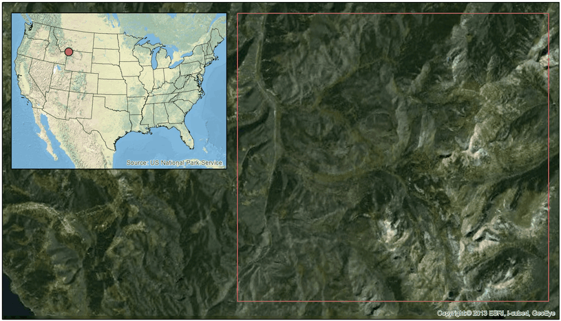

Yellowstone National Park fires

Time lapse sequence of LandsatLinkr-processed imagery (1974-2014). White indicates missing data at the beginning or end of the time series (the spectral-temporal fitting does not extrapolate).
Study area boundary. Portion of Yellowstone National Park in Northwest Wyoming.
Examples from NASA DEVELOP
DEVELOP, part of NASA's Applied Sciences Program, addresses environmental and public policy issues through interdisciplinary research projects that apply the lens of NASA Earth observations to community concerns around the globe. Bridging the gap between NASA Earth Science and society, DEVELOP builds capacity in both participants and partner organizations to better prepare them to address the challenges that face our society and future generations. With the competitive nature and growing societal role of science and technology in today's global workplace, DEVELOP is fostering an adept corps of tomorrow's scientists and leaders.
LLR was used in the following two projects from the NASA DEVELOP node at Colorado State Univeristy, Fort Collins, CO.
Example of MSS time series showing phenology pattern
MSS data is often overlooked because it has lower spatial and radiometric resolution, and records fewer wavelength bands than its successors (TM, ETM+, and OLI). However, it adds ~12 years of observation (1972-1984) to the Landsat archive for a total of 43+ years of Earth observation data. This record is unparalleled and is approaching an ecologically meaningful length of time to study short-term Earth surface changes. LandsatLinkr makes MSS images relevant and easy to work with by producing synthetic data that matches the qualities and spectral character of TM/ETM+ data. Below is an example of synthetic tasseled cap greenness (similar to NDVI) MSS data that demonstrates its utility for recording phenology in the north eastern US. The time series represents nearly all MSS images that intersect WRS-2 path/row: 014/032. The values are image median post-cloud masking and cropped to WRS-2 path/row: 014/032.
The plot was built with the Plotly.js API, so it is interactive. Click, scroll, hover, and choose options from the Plotly menu.